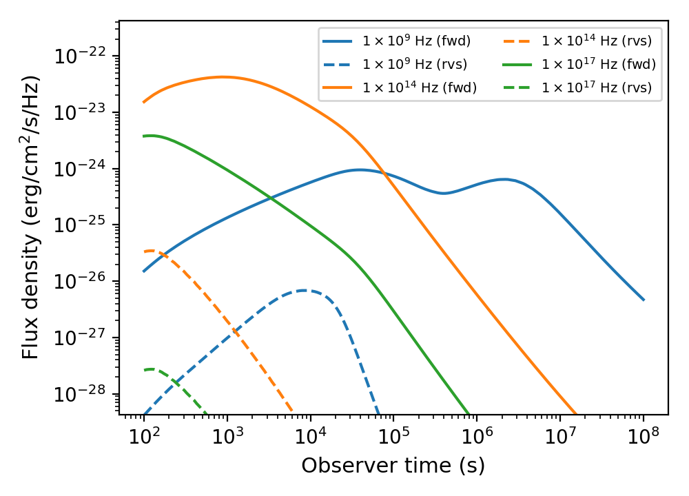
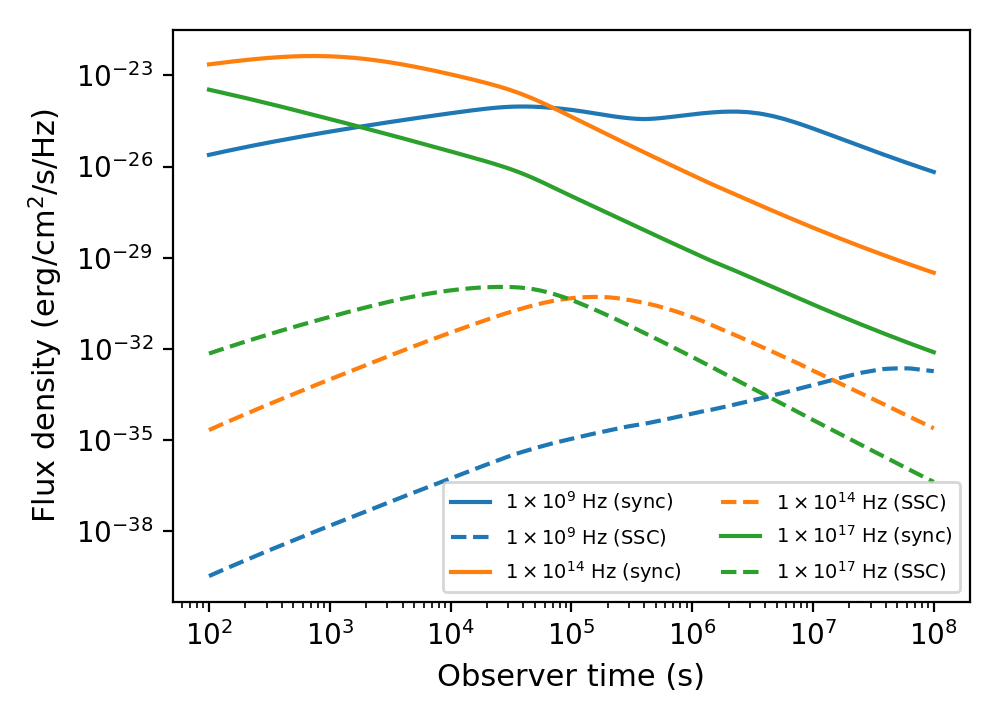

Models and Radiation
This section covers ambient media configurations, jet structure models, and radiation process settings.
Ambient Media Models
Wind Medium
from VegasAfterglow import Wind
# Create a stellar wind medium
wind = Wind(A_star=0.1) # A* parameter
#..other settings
model = Model(medium=wind, ...)
Stratified Medium
from VegasAfterglow import Wind
# Create a stratified stellar wind medium;
# smooth transited stratified medium. Inner region, n(r) = n0, middle region n(r) \propto 1/r^k_m, outer region n(r)=n_ism
# A = 0 (default): fallback to n = n_ism
# n0 = inf (default): wind bubble, from wind profile to ism profile
# A = 0 & n0 = inf: pure wind;
wind = Wind(A_star=0.1, n_ism = 1, n0 = 1e3)
# Use k_m to change the wind density power-law index (default k_m=2, i.e. n ∝ r^{-2})
wind = Wind(A_star=0.1, k_m=1.5) # n ∝ r^{-1.5}
#..other settings
model = Model(medium=wind, ...)
User-Defined Medium
from VegasAfterglow import Medium
mp = 1.67e-24 # proton mass in gram
# Define a custom density profile function
def density(phi, theta, r):# r in cm, phi and theta in radians [scalar]
return mp # n_ism = 1 cm^-3
#return whatever density profile (g*cm^-3) you want as a function of phi, theta, and r
# Create a user-defined medium
medium = Medium(rho=density)
#..other settings
model = Model(medium=medium, ...)
Jet Models
Gaussian Jet
from VegasAfterglow import GaussianJet
# Create a structured jet with Gaussian energy profile
jet = GaussianJet(
theta_c=0.05, # Core angular size (radians)
E_iso=1e53, # Isotropic-equivalent energy (ergs)
Gamma0=300 # Initial Lorentz factor
)
#..other settings
model = Model(jet=jet, ...)
Power-Law Jet
from VegasAfterglow import PowerLawJet
# Create a power-law structured jet
jet = PowerLawJet(
theta_c=0.05, # Core angular size (radians)
E_iso=1e53, # Isotropic-equivalent energy (ergs)
Gamma0=300, # Initial Lorentz factor
k_e=2.0, # Power-law index for energy angular dependence
k_g=2.0 # Power-law index for Lorentz factor angular dependence
)
#..other settings
model = Model(jet=jet, ...)
Two-Component Jet
from VegasAfterglow import TwoComponentJet
# Create a two-component jet
jet = TwoComponentJet(
theta_c=0.05, # Narrow component angular size (radians)
E_iso=1e53, # Isotropic-equivalent energy of the narrow component (ergs)
Gamma0=300, # Initial Lorentz factor of the narrow component
theta_w=0.1, # Wide component angular size (radians)
E_iso_w=1e52, # Isotropic-equivalent energy of the wide component (ergs)
Gamma0_w=100 # Initial Lorentz factor of the wide component
)
#..other settings
model = Model(jet=jet, ...)
Step Power-Law Jet
from VegasAfterglow import StepPowerLawJet
# Create a step power-law structured jet (uniform core with sharp transition)
jet = StepPowerLawJet(
theta_c=0.05, # Core angular size (radians)
E_iso=1e53, # Isotropic-equivalent energy of the core component (ergs)
Gamma0=300, # Initial Lorentz factor of the core component
E_iso_w=1e52, # Isotropic-equivalent energy of the wide component (ergs)
Gamma0_w=100, # Initial Lorentz factor of the wide component
k_e=2.0, # Power-law index for energy angular dependence
k_g=2.0 # Power-law index for Lorentz factor angular dependence
)
#..other settings
model = Model(jet=jet, ...)
Jet with Spreading
from VegasAfterglow import TophatJet
jet = TophatJet(
theta_c=0.05,
E_iso=1e53,
Gamma0=300,
spreading=True # Enable spreading
)
#..other settings
model = Model(jet=jet, ...)
Note
The jet spreading (Lateral Expansion) is experimental and only works for the top-hat jet, Gaussian jet, and power-law jet with a jet core. The spreading prescription may not work for arbitrary user-defined jet structures.
Magnetar Spin-down
from VegasAfterglow import Magnetar
# Create a tophat jet with magnetar spin-down energy injection; Luminosity 1e46 erg/s, t_0 = 100 seconds, and q = 2
jet = TophatJet(theta_c=0.05, E_iso=1e53, Gamma0=300, magnetar=Magnetar(L0=1e46, t0=100, q=2))
Note
The magnetar spin-down injection is implemented in the default form L0*(1+t/t0)^(-q) for theta < theta_c. You can pass the magnetar argument to the power-law and Gaussian jet as well.
User-Defined Jet
You may also define your own jet structure by providing the energy and lorentz factor profile. Those two profiles are required to complete a jet structure. You may also provide the magnetization profile, enregy injection profile, and mass injection profile. Those profiles are optional and will be set to zero function if not provided.
from VegasAfterglow import Ejecta
# Define a custom energy profile function, required to complete the jet structure
def E_iso_profile(phi, theta):
return 1e53 # E_iso = 1e53 erg isotropic fireball
#return whatever energy profile you want as a function of phi and theta in unit of erg [not erg per solid angle]
# Define a custom lorentz factor profile function, required to complete the jet structure
def Gamma0_profile(phi, theta):
return 300 # Gamma0 = 300
#return whatever lorentz factor profile you want as a function of phi and theta
# Define a custom magnetization profile function, optional
def sigma0_profile(phi, theta):
return 0.1 # sigma = 0.1
#return whatever magnetization profile you want as a function of phi and theta
# Define a custom energy injection profile function, optional
def E_dot_profile(phi, theta, t):
return 1e46 * (1 + t / 100)**(-2) # L = 1e46 erg/s, t0 = 100 seconds
#return whatever energy injection profile you want as a function of phi, theta, and time in unit of erg/s [not erg/s per solid angle]
# Define a custom mass injection profile function, optional
def M_dot_profile(phi, theta, t):
return 0 # return whatever mass injection profile you want [g/s, not g/s per solid angle]
# Create a user-defined jet
jet = Ejecta(E_iso=E_iso_profile, Gamma0=Gamma0_profile, sigma0=sigma0_profile, E_dot=E_dot_profile, M_dot=M_dot_profile)
#..other settings
#if your jet is not axisymmetric, set axisymmetric to False
model = Model(jet=jet, ..., axisymmetric=False, resolutions=(0.1, 0.5, 5))
# the user-defined jet structure could be spiky, the default resolution may not resolve the jet structure. if that is the case, you can try a finer resolution (phi_ppd, theta_ppd, t_ppd)
# where phi_ppd is the number of points per degree in the phi direction, theta_ppd is the number of points per degree in the theta direction, and t_ppd is the number of points per decade in the time direction .
Note
Plain Python callbacks work well for single model evaluations (light curves, spectra).
For multi-threaded MCMC fitting, use the @gil_free decorator to compile
your profile functions to native code, eliminating GIL contention across threads.
See the GIL-Free Native Callbacks section below and MCMC Parameter Fitting for details.
GIL-Free Native Callbacks (@gil_free)
When C++ evaluates a plain Python callback (e.g., a custom jet or medium profile), it must acquire the Global Interpreter Lock (GIL) for every call. During blast wave evolution this happens hundreds of times per model evaluation, which serializes the angular-profile loop across threads.
The @gil_free decorator compiles a Python function to native machine code via
numba, so C++ calls it directly as a C function pointer
— no GIL, no interpreter overhead:
pip install numba
Key differences from plain Python callbacks:
Decorate with
@gil_freePhysical parameters come as extra function arguments (after the spatial coordinates) instead of being captured from the enclosing scope
Call the decorated function with keyword arguments to bind parameters — this returns a
NativeFuncobject that C++ can call at full speedOnly
mathmodule functions and simple arithmetic are allowed (nonumpyarrays, no Python objects)
Working example — Gaussian jet + wind medium:
import math
import numpy as np
import matplotlib.pyplot as plt
from VegasAfterglow import Ejecta, Medium, Observer, Radiation, Model, gil_free
@gil_free
def gaussian_energy(phi, theta, E_iso, theta_c):
return E_iso * math.exp(-0.5 * (theta / theta_c) ** 2)
@gil_free
def gaussian_gamma(phi, theta, Gamma0, theta_c):
return 1.0 + (Gamma0 - 1.0) * math.exp(-0.5 * (theta / theta_c) ** 2)
@gil_free
def wind_density(phi, theta, r, A_star):
mp = 1.67e-24
return A_star * 5e11 * mp / (r * r)
# --- Build the model ---
# Calling the decorated function with keyword arguments binds those parameters
# and returns a NativeFunc. You can bind as many parameters as you need —
# they just need to appear after the spatial coordinates in the function signature.
# This is especially useful for MCMC, where you rebind parameters each step.
E_iso = 1e52 # these could come from MCMC sampler
Gamma0 = 300
theta_c = 0.1
A_star = 0.1
jet = Ejecta(
E_iso=gaussian_energy(E_iso=E_iso, theta_c=theta_c),
Gamma0=gaussian_gamma(Gamma0=Gamma0, theta_c=theta_c),
)
medium = Medium(rho=wind_density(A_star=A_star))
obs = Observer(lumi_dist=1e26, z=0.1, theta_obs=0.3)
rad = Radiation(eps_e=0.1, eps_B=1e-3, p=2.3)
model = Model(jet=jet, medium=medium, observer=obs, fwd_rad=rad)
times = np.logspace(2, 8, 100)
bands = np.array([1e9, 1e14, 1e17])
results = model.flux_density_grid(times, bands)
for i, nu in enumerate(bands):
plt.loglog(times, results.total[i, :])
plt.xlabel('Time (s)')
plt.ylabel('Flux Density (erg/cm²/s/Hz)')
plt.show()
Tip
Functions decorated with @gil_free must only use the math module
(not numpy) and simple arithmetic — no Python objects, arrays, or closures.
If you need more complex logic, use the plain Python callback approach instead.
Note
Built-in jet types (TophatJet, GaussianJet, PowerLawJet, etc.) are
already implemented in C++ and do not need this decorator. Use @gil_free
only for custom profiles passed via Ejecta or Medium.
Radiation Processes
Reverse Shock Emission
from VegasAfterglow import Radiation
#set the jet duration to be 100 seconds, the default is 1 second. The jet duration affects the reverse shock thickness (thin shell or thick shell).
jet = TophatJet(theta_c=0.1, E_iso=1e52, Gamma0=300, duration = 100)
# Create a radiation model with both forward and reverse shock synchrotron radiation
fwd_rad = Radiation(eps_e=1e-1, eps_B=1e-3, p=2.3)
rvs_rad = Radiation(eps_e=1e-2, eps_B=1e-4, p=2.4)
#..other settings
model = Model(fwd_rad=fwd_rad, rvs_rad=rvs_rad, resolutions=(0.1, 0.5, 5),...)
times = np.logspace(2, 8, 200)
bands = np.array([1e9, 1e14, 1e17])
results = model.flux_density_grid(times, bands)
plt.figure(figsize=(4.8, 3.6),dpi=200)
# Plot each frequency band
for i, nu in enumerate(bands):
exp = int(np.floor(np.log10(nu)))
base = nu / 10**exp
plt.loglog(times, results.fwd.sync[i,:], label=fr'${base:.1f} \times 10^{{{exp}}}$ Hz (fwd)')
plt.loglog(times, results.rvs.sync[i,:], label=fr'${base:.1f} \times 10^{{{exp}}}$ Hz (rvs)')#reverse shock synchrotron
{kind=link}

Forward (solid) and reverse (dashed) shock synchrotron light curves at three frequency bands.
Note
You may increase the resolution of the grid to improve the accuracy of the reverse shock synchrotron radiation if you see spiky features.
Inverse Compton Cooling
from VegasAfterglow import Radiation
# Create a radiation model with SSC and IC cooling (without Klein-Nishina correction)
rad = Radiation(eps_e=1e-1, eps_B=1e-3, p=2.3, ssc=True, kn=False)
#..other settings
model = Model(fwd_rad=rad, ...)
Self-Synchrotron Compton Radiation
from VegasAfterglow import Radiation
# Create a radiation model with self-Compton radiation and Klein-Nishina corrections
rad = Radiation(eps_e=1e-1, eps_B=1e-3, p=2.3, ssc=True, kn=True)
#..other settings
model = Model(fwd_rad=rad, ...)
times = np.logspace(2, 8, 200)
bands = np.array([1e9, 1e14, 1e17])
results = model.flux_density_grid(times, bands)
plt.figure(figsize=(4.8, 3.6),dpi=200)
# Plot each frequency band
for i, nu in enumerate(bands):
exp = int(np.floor(np.log10(nu)))
base = nu / 10**exp
plt.loglog(times, results.fwd.sync[i,:], label=fr'${base:.1f} \times 10^{{{exp}}}$ Hz (sync)')#synchrotron
plt.loglog(times, results.fwd.ssc[i,:], label=fr'${base:.1f} \times 10^{{{exp}}}$ Hz (SSC)')#SSC
{kind=link}

Synchrotron (solid) and self-synchrotron Compton (dashed) light curves at three frequency bands with Klein-Nishina corrections.
Note
When ssc=True, SSC cooling of electrons is automatically included. The kn flag controls whether Klein-Nishina corrections are applied:
(ssc = True, kn = False): SSC emission with IC cooling using the Thomson cross-section.
(ssc = True, kn = True): SSC emission with IC cooling and Klein-Nishina corrections.
CMB inverse Compton cooling can be enabled independently via cmb_cooling=True, which is useful for high-redshift sources where the CMB energy density is significant. When both ssc and cmb_cooling are active, the total Compton-Y includes both contributions.
For details on the underlying radiation physics, see GRB Afterglow Physics.